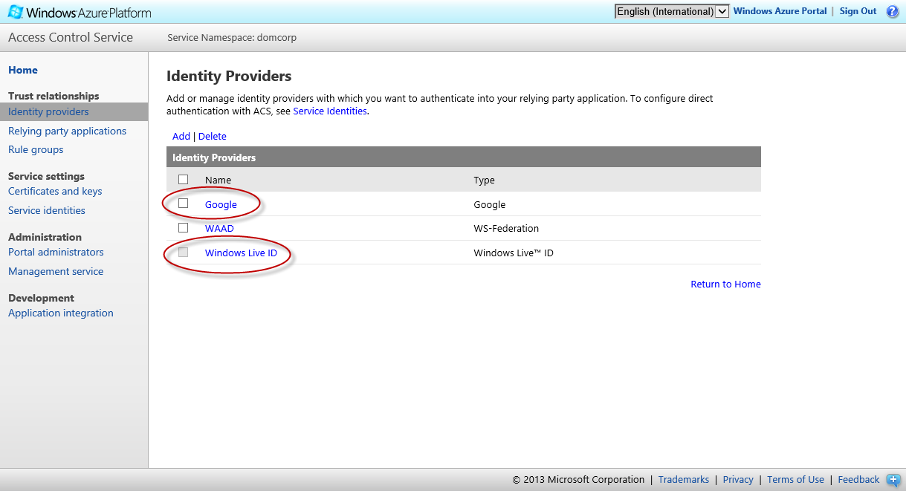
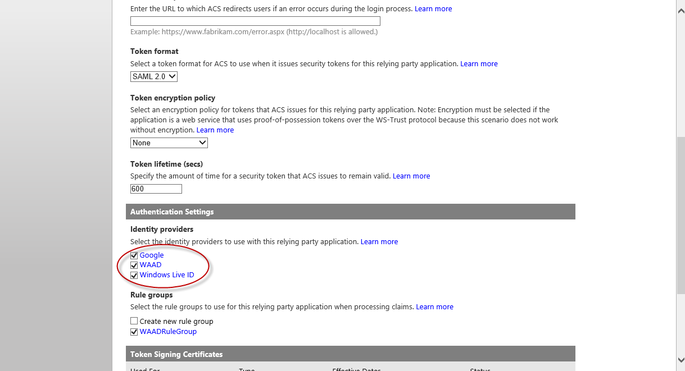
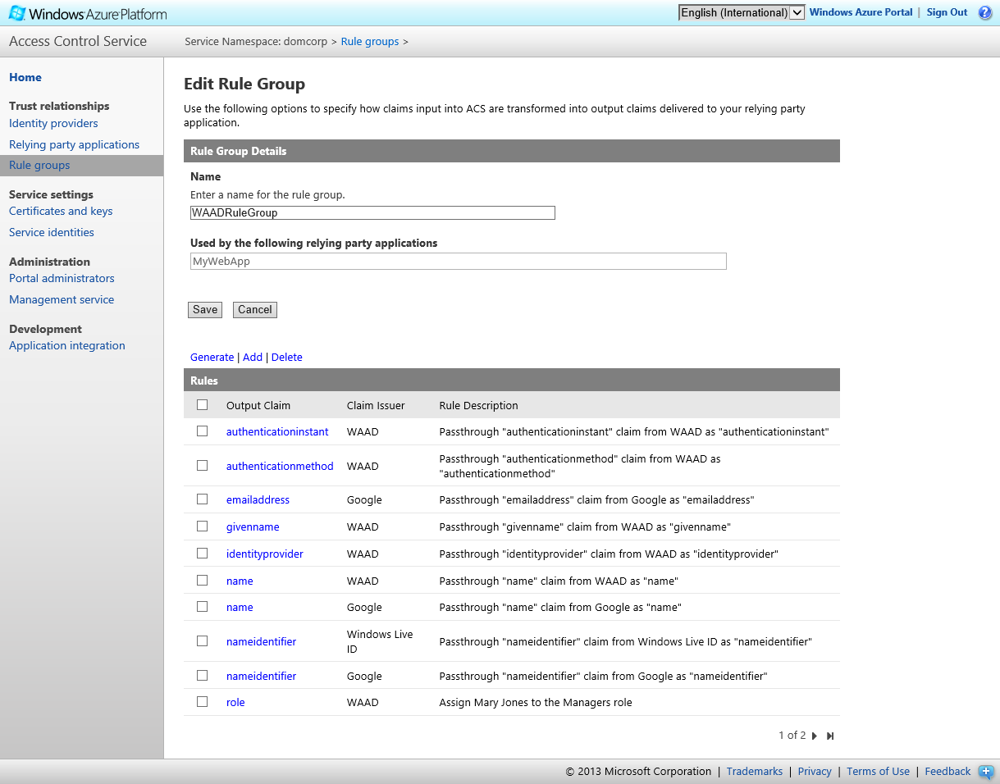
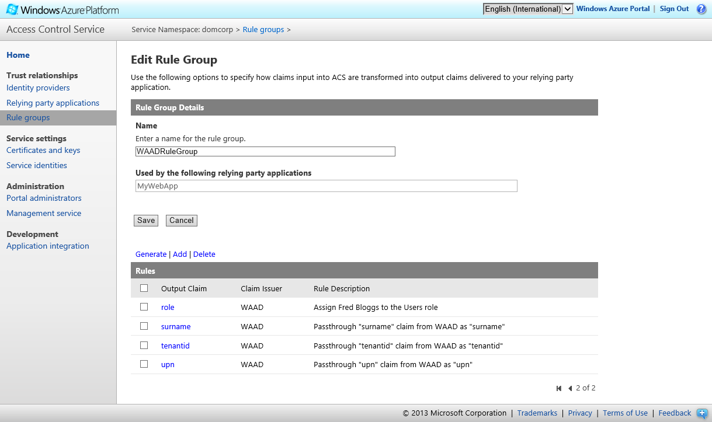
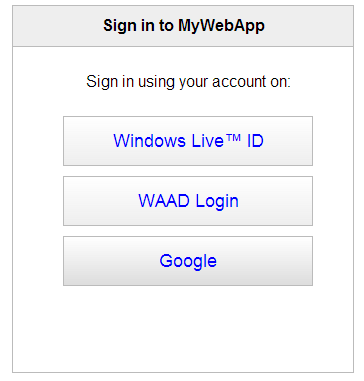

Currently, users can only authenticate with Windows Azure Active Directory to access the sample web site. If you want to enable additional identity providers, you can make the necessary configuration changes in Access Control Service (ACS).
Add identity providers such as Google, Yahoo! and Facebook to ACS.

Configure the relying party to use the identity providers you selected.

Generate default rules to pass through claims from these identity providers to the relying party.
 
Note: The set of claims available from the other identity providers is much more limited that those available with WAAD. You'll also need to add any rules that will assign the Manager role claim to appropriate users.
Alternatively, you could use the PowerShell script (available here) to make the changes:
# Prerequisites:
# Windows Azure PowerShell (http://go.microsoft.com/?linkid=9811175)
# You must provide:
# - Your ACS namespace name
# - Your ACS management key
# - The ACS name for your relying party
# To work with ACS
Import-Module WAPPSCmdlets
$ACSNamespace = '[your ACS namespace name]'
$ACSManagementkey = '[your ACS Management Key]'
$RelyingPartyName = '[the name of your relying party in ACS]'
$WAADIdentityProvider = 'WAAD'
$RuleGroupName = 'WAADRuleGroup'
# Add the Google ID identity provider
Add-IdentityProvider -PreconfiguredIpType Google -Type Preconfigured -AllowedRelyingParties @($RelyingPartyName) -LoginLinkText "Login with your Google account" -ManagementKey $ACSManagementkey -Namespace $ACSNamespace
# Make sure all the identity providers are enabled for the relying party
$waadip = Get-IdentityProvider -ManagementKey $ACSManagementkey -Name $WAADIdentityProvider -Namespace $ACSNamespace
$googleip = Get-IdentityProvider -ManagementKey $ACSManagementkey -Name Google -Namespace $ACSNamespace
$liveip = Get-IdentityProvider -ManagementKey $ACSManagementkey -Name 'Windows Live ID' -Namespace $ACSNamespace
$relyingParty = Get-RelyingParty -ManagementKey $ACSManagementkey -Name $RelyingPartyName -Namespace $ACSNamespace
$relyingParty.IdentityProviders = @($waadip, $googleip, $liveip)
Remove-RelyingParty -Name $RelyingPartyName -ManagementKey $ACSManagementkey -Namespace $ACSNamespace
Add-RelyingParty -RelyingParty $relyingParty -ManagementKey $ACSManagementkey -Namespace $ACSNamespace
# Generate the default rules for the Google and Microsoft IDs
Add-DefaultPassthroughRules -GroupName $RuleGroupName -IdentityProviderName Google -ManagementKey $ACSManagementkey -Namespace $ACSNamespace
Add-DefaultPassthroughRules -GroupName $RuleGroupName -IdentityProviderName 'Windows Live ID' -ManagementKey $ACSManagementkey -Namespace $ACSNamespaceWhen an unauthenticated user visits the web site, they can choose how to authenticate.
